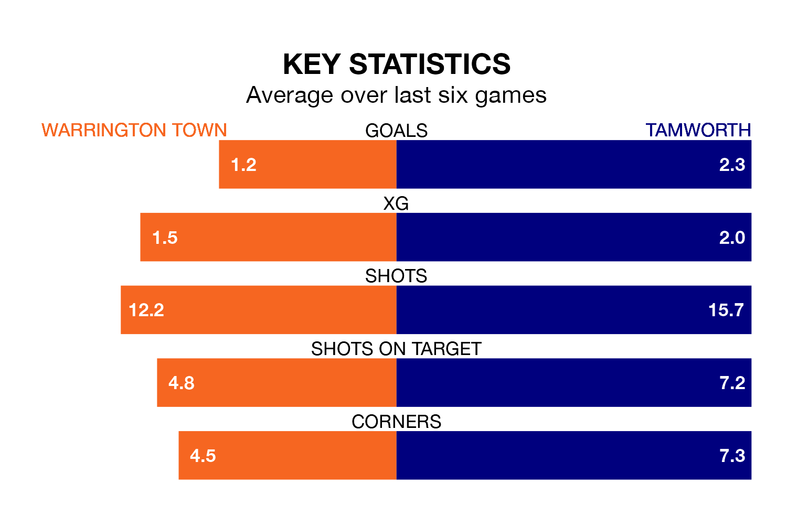

Mid-season relegation candidates Warrington Town face a challenge against high-flying Tamworth at Cantilever Park on Tuesday.
Warrington Town are rooted to the bottom of the National League North and South table, and have picked up 10 wins and seven draws in their 26 games to date.
Tamworth, meanwhile, are top of the standings with 56 points, having won 18 and drawn two.
With 49 goals in 26 games so far this season, Tamworth are the league's joint-third-highest scorers with 1.9 goals per game. And they are conceding fewer than average, letting in 19 goals at a rate of 0.7 per game.
Warrington, meanwhile, are below average scorers, with 1.3 goals per game, compared to a league average of 1.4. They have conceded 1.2 goals per game.
With Jasbir Singh between the sticks, the away side can rely on one of the league's safest pair of hands. He has kept 12 clean sheets in his 25 appearances this season, and no 'keeper has prevented the opposition scoring more often in National League North and South.
In Town's net, Tony Thompson has three clean sheets in six games. He has conceded a goal every 77 minutes, 90% more often than the 150 minutes between goals for Singh.
The hosts are in mixed form in National League North and South, with two wins and a draw from their last six games.
With five wins and one loss over that period, Tamworth's form is much better – they have taken 15 points from 18, compared to Warrington's seven.
Warrington's last match was on December 26, a 2-0 loss against Chester.
Tamworth beat Rushall Olympic 2-1 last time out, also on December 26, with Jordan Cullinane-Liburd and Kyle Finn on the scoresheet.
Updated: 11:31, 09/01/24